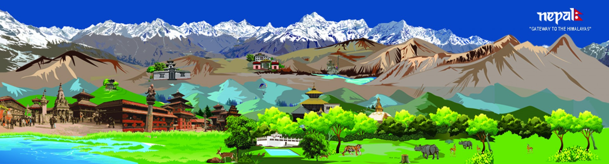
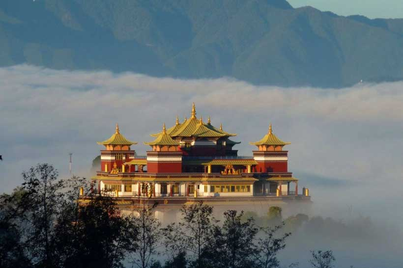
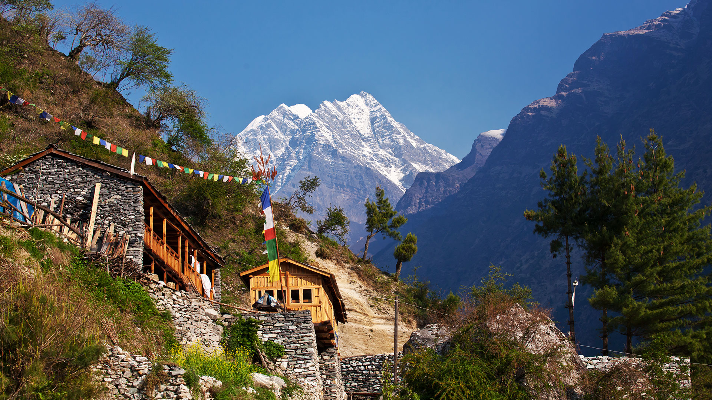
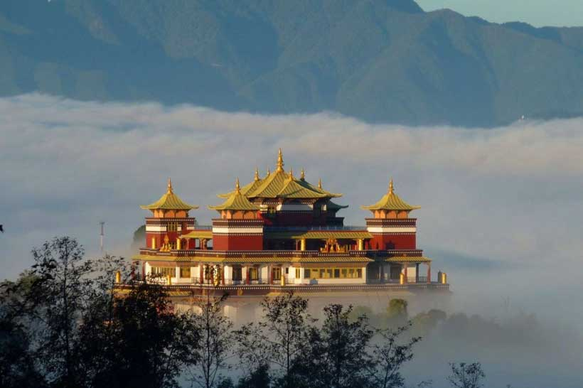
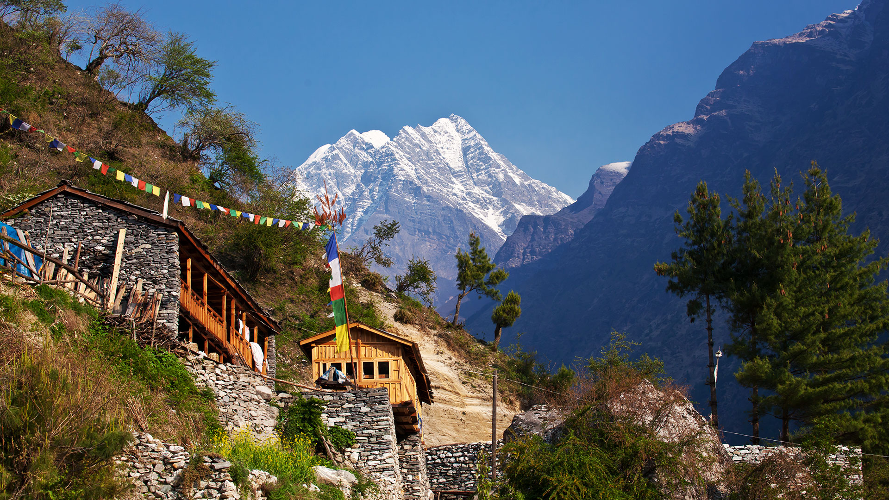

Nepal, officially the Federal Democratic Republic of Nepal, is a country in South Asia. It is mainly in the Himalayas, but also includes parts of the Indo-Gangetic Plain. It is the 49th largest country by population and 93rd largest country by area. It is landlocked, and borders China in the north and India in the south, east and west, while Bangladesh is located within only 27 km (17 mi) of its southeastern tip and Bhutan is separated from it by the Indian state of Sikkim. Nepal has a diverse geography, including fertile plains, subalpine forested hills, and eight of the world's ten tallest mountains, including Mount Everest, the highest point on Earth. Kathmandu is the capital and the largest city. Nepal is a multiethnic country with Nepali as the official language.
The Constitution of Nepal, adopted in 2015, affirms Nepal as a secular federal parliamentary republic divided into seven provinces. Nepal was admitted to the United Nations in 1955, and friendship treaties were signed with India in 1950 and the People's Republic of China in 1960. Nepal hosts the permanent secretariat of the South Asian Association for Regional Cooperation (SAARC), of which it is a founding member. Nepal is also a member of the Non-Aligned Movement and the Bay of Bengal Initiative. The military of Nepal is the fifth largest in South Asia; it is notable for its Gurkha history, particularly during the world wars, and has been a significant contributor to United Nations peacekeeping operations.
By 55,000 years ago, the first modern humans had arrived on the Indian subcontinent from Africa, where they had earlier evolved. The earliest known modern human remains in South Asia date to about 30,000 years ago. The oldest discovered archaeological evidence of human settlements in Nepal dates to around the same time.
After 6500 BCE, evidence for domestication of food crops and animals, construction of permanent structures, and storage of agricultural surplus appeared in Mehrgarh and other sites in what is now Balochistan. These gradually developed into the Indus Valley Civilization, the first urban culture in South Asia. Prehistoric sites of palaeolithic, mesolithic and neolithic origins have been discovered in the Siwalik hills of Dang district. The earliest inhabitants of modern Nepal and adjoining areas are believed to be people from the Indus Valley Civilization. It is possible that the Dravidian people whose history predates the onset of the Bronze Age in the Indian subcontinent (around 6300 BCE) inhabited the area before the arrival of other ethnic groups like the Tibeto-Burmans and Indo-Aryans from across the border. By 4000 BCE, the Tibeto-Burmese people had reached Nepal either directly across the Himalayas from Tibet or via Myanmar and north-east India or both. Another possibility for the first people to have inhabited Nepal are the Kusunda people. According to Hogdson (1847), the earliest inhabitants of Nepal were perhaps the Kusunda people, probably of proto-Australoid origin. Stella Kramrisch ( 1964 ) mentions a substratum of a race of Pre - Dravidians and Dravidians, who were in Nepal even before the Newars, who formed the majority of the ancient inhabitants of the valley of Kathmandu.
By the late Vedic period, Nepal was being mentioned in various Hindu texts, such as the late Vedic Atharvaveda Pariśiṣṭa and in the post-Vedic Atharvashirsha Upanishad. The Gopal Bansa was the oldest dynasty to be mentioned in various texts as the earliest rulers of the central Himalayan kingdom known by the name 'Nepal'. The Gopalas were followed by Kiratas who ruled for over 16 centuries by some accounts. According to the Mahabharata, the then Kirata king went to take part in the Battle of Kurukshetra. In the south-eastern region, Janakpurdham was the capital of the prosperous kingdom of Videha or Mithila, that extended down to the Ganges, and home to King Janaka and his daughter, Sita.
Nepal is divided into three principal physiographic belts known as Himal-Pahad-Terai. Himal is the mountain region containing snow and situated in the Great Himalayan Range; it makes up the northern part of Nepal. It contains the highest elevations in the world including 8,848 metres (29,029 ft) height Mount Everest (Sagarmāthā in Nepali) on the border with China. Seven other of the world's "eight-thousanders" are in Nepal or on its border with China: Lhotse, Makalu, Cho Oyu, Kangchenjunga, Dhaulagiri, Annapurna and Manaslu. Pahad is the mountain region that does not generally contain snow. The mountains vary from 800 to 4,000 metres (2,600 to 13,100 ft) in altitude, with progression from subtropical climates below 1,200 metres (3,900 ft) to alpine climates above 3,600 metres (11,800 ft). The Lower Himalayan Range, reaching 1,500 to 3,000 metres (4,900 to 9,800 ft), is the southern limit of this region, with subtropical river valleys and "hills" alternating to the north of this range. Population density is high in valleys but notably less above 2,000 metres (6,600 ft) and very low above 2,500 metres (8,200 ft), where snow occasionally falls in winter. The southern lowland plains or Terai bordering India are part of the northern rim of the Indo-Gangetic Plain. Terai is the lowland region containing some hill ranges. The plains were formed and are fed by three major Himalayan rivers: the Koshi, the Narayani, and the Karnali as well as smaller rivers rising below the permanent snowline. This region has subtropical to tropical climate. The outermost range of the foothills called Sivalik Hills or Churia Range, cresting at 700 to 1,000 metres (2,300 to 3,280 ft), marks the limits of the Gangetic Plain; however broad, low valleys called Inner Terai Valleys (Bhitri Tarai Upatyaka) lie north of these foothills in several places.

 


